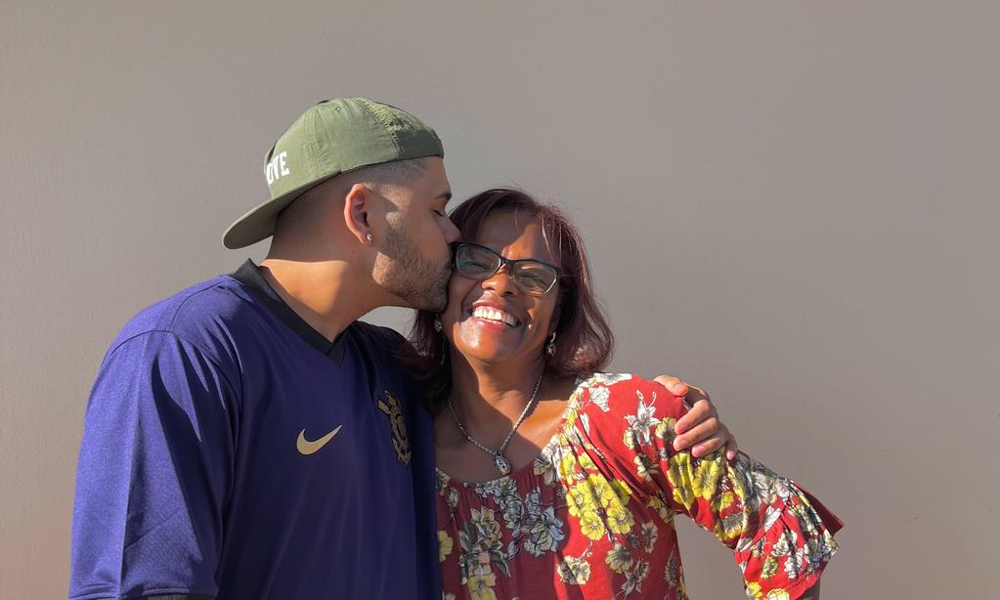
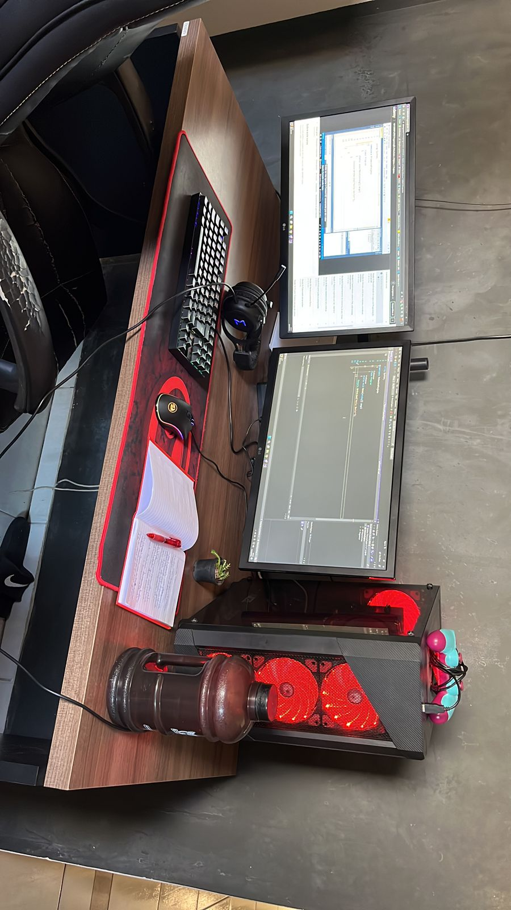
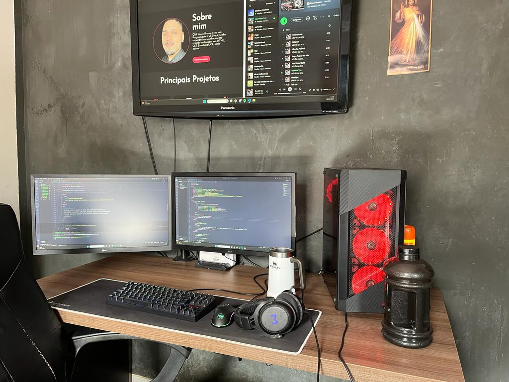

26 de Setembro de 2000
Minha base

Primeiramente, não posso deixar de falar de quem me gerou, de quem me
criou e de quem fez ser quem eu sou. Todas são em uma pessoa só, a
minha mãe! A mulher mais incrível do mundo que é o motivo de eu me
entregar todos os dias aos estudos para ter um retorno digno que ela
merece. Eu não seria nada sem essa mulher e agradeço todos os dias por
estar comigo do começo ao fim acreditanto em mim. Eu te amo Mãe!
28 de Outubro de 2022
Jornada para o Mercado de Trabalho

Em um determinado dia, um amigo muito querido,
Bruno Peternella, mesmo sabendo que eu já estava cursando faculdade na área de
Análise e Desenvolvimento de Sistemas, me recomendou a explorar a
linguagem de programação C#, que ele próprio utiliza em seu trabalho.
Intrigado por sua sugestão, decidi seguir seu conselho e me matriculei
em um curso dedicado a essa linguagem. Desde então, mergulhei nesse
estudo e me deparei com a fascinante essência da programação em C#, o
que despertou em mim uma verdadeira paixão pelos seus princípios e
fundamentos. Foi nesse dia, que se tornou um marco em minha jornada,
que iniciei um compromisso genuíno de aprofundar meus estudos nessa
área. Ao longo do percurso, desenvolvi um projeto envolvendo o jogo de
xadrez, o que apenas reforçou meu entusiasmo e dedicação. Em suma,
esse foi o ponto de partida que impulsionou minha determinação em
estudar de forma diligente e dedicada.
15 de Maio de 2023
Conhecendo o Front-end

Aqui foi diferente, decidi criar um portfólio para divulgar meu
projeto feito em C#, e escolhi utilizar HTML e CSS para essa tarefa.
Embora já tivesse estudado um pouco sobre HTML e CSS durante minha
faculdade, confesso que não havia despertado grande interesse em mim
naquele momento. No entanto, ao embarcar nessa jornada de criação do
portfólio, algo mágico aconteceu: fui cativado pela arte de
desenvolver interfaces usando HTML e CSS. A partir desse momento,
decidi mergulhar de cabeça no mundo do front-end. Motivado por esse
encantamento, inscrevi-me na jornada "NLW Spacetime da Rocketseat" e
hoje me encontro apaixonado tanto pelo desenvolvimento back-end com
C#, quanto pelo front-end com HTML, CSS e JavaScript. Essa trajetória
despertou em mim um profundo interesse em expandir meus conhecimentos
nessas áreas, e estou empolgado para explorar ainda mais os desafios e
as possibilidades oferecidas pela união harmoniosa entre o back-end e
o front-end.